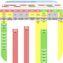

Tree Status
Options

Options
Custom URL
URL for the Waterfall (url to browse to):
URL for the inner frame containing tree status:
Button Behavior
Open a new tab when clicking the icon (otherwise, an existing waterfall tab, if found, will be used)
Sheriff Settings
When sheriff, show pop up notifications when the tree changes state
Your username that shows up in the sheriff list (e.g. $USER@chromium.org)
Save Settings
Save
Cancel